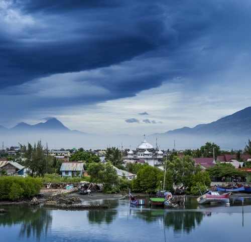

|  | ||
Des destinations à couper le soufle!vous aimer voyager dans des pays paradisiaques sans etre obliger de manger des pate pendant 4mois? si oui, le nepal est fait pour vous une moyen de 4,8 |
||
 |
 sur tripadvisor
sur tripadvisor
-
activiter remarquables:
- Randonner dans les montagnes de l'himalaya
- S'aventurer dans les forets subalpines
- Prendre le soleil sur les magnifique plages (exemple tama kosi)
- participer aux safaris pour observer des animaux surprenant